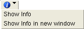

Info Pane
Access with: View > Info or right-click a design element and choose Show … Info
The Info Pane displays detailed information about design elements and can perform searches for design elements in the layout. Searches also use the XDB binary cross-reference database, if present, to search for source names in the layout. The Info Pane is available in Calibre RVE for LVS, PERC, and PEX.
Description
Open the Info Pane with one of the following methods:
ChooseView > Info.
Right-click a design element in a detailed view pane, then choose Show … Info.
Right-click a result in the Finder tab, and choose Show … Info.
Click the
 button
to open the highlight and info menu and choose Show … Info.Note:
button
to open the highlight and info menu and choose Show … Info.Note:You can specify where to display the design information when opening the Info Pane with the Show … Info right-click selection. Click the Options tab, choose the LVS/PERC/PEX category, enable “Show Info Pane”, and select the setting for “Show Info Pane in new window” as follows:
- Enabled — Design information is displayed in a new, stand-alone window
- Disabled — Design information is displayed in the Info pane
TipUse the Finder Tab for searches in the source.
See the “Usage Notes” for further information.
Objects
Item |
Description |
|---|---|
Search field |
Enter text of an item or list of items to search for in the layout. Also see “Searching for a List of Objects in the Layout”.
To search in a specific layout cell, add “in cell_name” after the search string, as in: MP0 in pllclk 12 5 2 in DFFR To find objects at a specific location, enter the coordinates separated by a space or comma.
To start the search, press Enter on the keyboard,
or click the
The entry field maintains a history of past searches; press the down-arrow keyboard key when the entry field is empty to see the history. |
Info button  |
Starts a search in the layout for the entry in the search field.
You can choose to display the new information within the Info Pane or in a new stand-alone window. |
Select location in layout
|
Click to select a location in the layout. The coordinates are entered into the search box and the design elements at the location are entered in the search results area. |
Show Highlight Menu button
|
Displays the highlight menu for the object in the search field. |
Results area |
Displays the most recent result above the separator line. Results are given in a tree view that can be expanded or collapsed.
Click an element icon to display it in the schematic view and highlight it in your layout viewer. |
Usage Notes
Devices and instances in the Info Pane — Searches in the Info Pane search for devices first, so if a search in the Info Pane finds both a device and an instance that match the query, only the device is shown. Any later search in the Info Pane that returns a corresponding instance will not be displayed if the device information is still present.
You can use the Finder Tab to specify a search for an instance or a device. Right-click an object in the Finder results area and choose Show Device Info or Show Instance Info to display the object in the Info Pane. If the selected object is already displayed as either a device or an instance, a second entry is not displayed in the Info Pane.
Search in the source netlist — Use the Finder Tab.
Ports on net entry in hierarchy — Calibre defines ports as objects created by the Port Layer Text and Port Layer Polygon statements. This definition of a port may result in the hierarchy display in the Info Pane showing a different number of ports than shown in the schematic netlist.
Trace net inside instance — Click the T icon to highlight the net inside the instance.
Open new window for Info — Info for each design element is displayed in a separate undocked window if “Show Info Pane in new window” is enabled on the
 Options tab
in the LVS/PERC/PEX category.
Options tab
in the LVS/PERC/PEX category.
You can use the Finder tab to select objects in an attached layout viewer and display the object information in the Finder Tab results area. See “Find Particular Objects”.